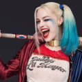
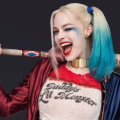

BATMAN
Bruce Wayne es el único personaje que se identifica como Batman y aparece en Batman, Detective Comics, Batman y Robin, y Batman: The Dark Knight. Dick Grayson vuelve al manto de Nightwing
ALFRET
Alfred tuvo dos orígenes: uno fue el que crió a Bruce Wayne desde que sus padres fueron asesinados y la otro él entró en la vida de Bruce Wayne después de haber adoptado a Dick.

BATGIRL
Batgirl o Batichica es el nombre de varias superheroínas ficticias que aparecen en los cómics de DC Comics, representados como contrapartes femeninas del superhéroe Batman
ROBIN
El personaje fue creado originalmente por Bob Kane, Bill Finger y Jerry Robinson, para servir como contraparte menor del superhéroe Batman
 

HARLEY QUINN
La creación de Harley Quinn fue una idea de último minuto propuesta por el escritor estadounidense Paul Dini para modificar una escena del vigésimo-segundo episodio de Batman: la serie animada
GUASON
Joker es un personaje creado por Bill Finger, Bob Kane y Jerry Robinson, e introducido en el primer ejemplar del comic book Batman, en abril de 1940, publicado por DC Comics.
PINGÜINO
El Pingüino es un personaje ficticio, un supervillano que aparece en los cómics publicados por DC Comics. Es conocido como uno de los enemigos más antiguos y persistentes de Batman
HIEDRA
Hiedra Venenosa es un personaje ficticio, creado por Robert Kanigher y Sheldon Moldoff, el personaje hizo su primera aparición en Batman # 181.Su nombre real es Pamela Lillian Isley.
CATWOMAN
Catwoman es un personaje ficticio creado por Bill Finger y Bob Kane. El personaje hizo su debut como "La Gata" en Batman #1, y su nombre real es Selina Kyle.
DOS CARAS
Dos Caras es un supervillano ficticio que aparece en los cómics publicados por DC Comics, comúnmente como adversario del superhéroe Batman. Apareció por primera vez en Detective Comics # 66.
ENIGMA
Riddler es un personaje ficticio, supervillano y enemigo de Batman. Su aparición fue en Detective Comics N° 140. Conocido por su traje verde con un signo de interrogación, está obsesionado con rompecabezas y juegos de palabras
MR FRIO
Creado por el escritor Dave Wood y el artista Sheldon Moldoff, apareció por primera vez en Batman # 121 como el criminal basado en el hielo Mr. Zero